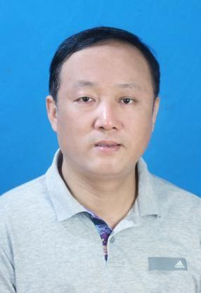

|  |
Jun Song（宋 军） |
宋军，博士，教授。国家注册信息安全工程师（CISE）、IEEE会员。2019年至今担任计算机学院信安系支部书记，2004-2012年，2014-2019年担任计算机学院信息安全系主任。2003年获得中国地质大学（武汉）计算机应用技术硕士学位，2008年获武汉大学计算机软件与理论专业博士学位，师从于我国著名信息安全专家武汉大学张焕国教授。2010-2011年公派加拿大Vitoria大学计算机系访问学者，合作导师Dr.Jianping Pan。近年来主要研究方向为“密码学及其应用、无线网络安全、大数据与人工智能安全、地理空间信息安全”。
本团队包括教授、副教授三人，研究生十余人，本科生30余人，主要从事信息安全方向教学科研工作。主要研究方向包括密码学及其应用、无线车载网安全、大数据与人工智能安全、地理空间信息安全。近年来，在上述研究领域发表国际期刊和国际会议论文二十余篇，主持相关方向科研项目多项，到账经费200余万元。在实验室全体师生的共同努力下，本团队近年来在科研成果、教学成果、学生获奖等方面均取得了较丰硕的成绩。本团队指导的研究生和本科生，近年来在国内外知名企业、知名高校、科研院所等供职和研修，在多个方面均取得了优异的成绩。
本团队历届毕业生包括：罗淼（深圳证券）、张磊（加拿大IBM）、贺春娇（武汉审计局）、董文杰（重庆地调局）、翁伟兵（华中电力科技）、赵健（华为）、韩春玲（中科院信息所）、张默涵（北电）、王开心（武汉任子行）、顿明（湖北银联商务）、庄旨鉴（北京太极）、肖诗尧（美国亚马逊）、庞晓健（南方电网）、田凯（美国西北大学）、林婉霜（北航硕博）、牛蕴方（中科院自动化所）、惠征（南京维沃）、胡雨涛（华科硕博）、刘瑞（加拿大Victoria硕博）、高坤（悉尼UTS硕博）、齐笑田（加拿大Victoria硕士）等。
[13].Weiping Deng，Yan Peng，Fan Yang，Jun Song."Feature Optimization and Hybrid Classification for Malicious Web Page Detection." Concurrency and Computation: Practice and Experience 在刊.
[12].Rui Liu, Jun Song*, Zhiming Huang and Jianping Pan."EQRC: A Secure QR Code-based E-coupon Framework Supporting Online and Offline Transactions." Journal of Computer Security 在刊.
[11].Jun Song, Kun Gao, Xinyang Shen, Xiaotian Qi, Rui Liu, Kim-Kwang Raymond Choo."QRFence: A Flexible and Scalable Link Security Detection Framework for QR Code on Android." Future Generation Computer Systems,88 (2018): 663-674. (SCI, T2)
[10].Sambit Kumar Mishra, Deepak Puthal, Bibhudatta Sahoo, Prem Prakash Jayaraman,Jun Song, Albert Y. Zomaya, Rajiv Ranjan."Energy-efficient VM-placement in cloud data center." Sustainable Computing: Informatics and Systems2018, (20）:48-55. （SCI，T2）
[9].Meisong Wang, Prem Prakash Jayaraman, Ellis Solaiman, Lydia Y. Chen, Zheng Li,Jun Song,Dimitrios Georgakopoulos, Rajiv Ranjan." A multi-layered performance analysis for cloud-based topic detection and tracking in Big Data applications." Future Generation Comp. Syst.2018,(87):580--590. （SCI，T2）
[8].Jun Song, Fan Yang, and Lizhe Wang."Secure authentication in motion: A novel online payment framework for drive-thru Internet." Future Generation Computer Systems,76 (2017): 146-158.（SCI，T2）
[7].Song J, Yang F, Choo K K R, et al. "SIPF: A Secure Installment Payment Framework for Drive-Thru Internet[J]." ACM Transactions on Embedded Computing Systems, 2017, 16(2):52:1-52:18.（SCI，T4）
[6].Liu Y, Yang F, Gao K, Dong W, Song J."A zero-watermarking scheme with embedding timestamp in vector maps for Big Data computing[J]." Cluster Computing, 2017；20(4):3667-3675. （SCI，T3）
[5].Zhang, Lei, Jun Song, and Jianping Pan."A Privacy-Preserving and Secure Framework for Opportunistic Routing in DTNs." IEEE Transactions on Vehicular Technology, 65.9 (2015): 7684-7697. （SCI，T2）
[4].Jun Song, Han C, Wang K, et al. "An integrated static detection and analysis framework for android." Pervasive and Mobile Computing , 32 (2016): 15-25. （SCI，T3）
[3].Jun Song, He C J, Yang F, et al. "A privacy‐preserving distance‐based incentive scheme in opportunistic VANETs[J]." Security & Communication Networks, 9.15 (2016): 2789-2801.（SCI，T4）
[2].Jun Song, Zhang M, Han C, et al. "Towards Fast Repackaging and Dynamic Authority Management on Android[J]." Wuhan University Journal of Natural Sciences, 2016, 21(1):1-9.（中文核心）
[1].Jun Song, Chunjiao H E , Lei Z , et al. "Toward an RSU-unavailable lightweight certificateless key agreement scheme for VANETs[J]." China Communications, , 2014, 11(9):93-103.（SCI，T4）
[3].Rui Liu,Jun Song,Jianping Pan, "EQRC: An Enhanced QR Code-based Secure E-coupon Transaction Framework." ICC2019：1--6. 2019 IEEE International Conference on Communications, {ICC},2019, Shanghai, China, May 20-24, 2019.
[4].Xue S, He C,Jun Song, "An Improved PPCT Based Dynamic Graph Software Watermarking Scheme[C]" Fifth International Conference on IMCCCs,2015:825-829. （EI）
[2].Zhang L,Song J,Pan J. "Towards privacy-preserving and secure opportunistic routings in VANETs[C]." IEEE SECON‘2011，Eleventh IEEE International Conference on Sensing, Communication, and NETWORKING.IEEE,, 2014:627-635.（CCF B类会议）
[1].Jun Song,Yanyan Zhuang, Jianping Pan, Lin Cai. "Certificateless Secure Upload for Drive-thru Internet." IEEE International Conference on Communications ICC2011,Kyoto, Japan, July，2011.(CCF C类会议）
| 序号 | 立项登记号 | 项目名称 | 项目来源 | 起止时间 |
| - | - | 湖北省高价值知识产权培育工程（专利类）项目(主持) | 湖北省知识产权局 | 2020-1-1-2至021-12-30 |
| 01 | 2019196565 | 济南城区四维地质环境可视化信息系统平台建设项目数据库建设、专题研究采购(参加) | 横向课题 | 2019-10-15至2020-12-31 |
| 02 | 2020193183 | 跨域网络空间动态隐私保护方法研究(参加) | 国家自然科学基金面上项目 | 2020-01-01至2023-12-31 |
| 03 | 2019190008 | 野外样品采集系统的开发和数据处理系统的完善与开发(主持) | 地调项目 | 2019-05-16至2019-12-31 |
| 04 | 2018196491 | 文件比对(参加) | 横向项目 | 2018-11-01至2019-12-31 |
| 05 | 2018196061 | 湖北省网络安全态势感知大数据分析系统---威胁情报分析子系统防护指南V1.0版本研发(主持) | 横向项目 | 2018-01-20至2019-01-20 |
| 06 | 2017196106 | 智能物联网管理平台的设计与软件开发(参加) | 横向项目 | 2017-05-01至2017-12-30 |
| 07 | 2017193096 | 网络编码中基于格上困难问题的同态认证技术研究(参加) | 国家自然基金面上项目 | 2017-01-01至2020-12-31 |
| 08 | 2014195065 | 面向大数据细粒度访问控制的可验证性属性撤销构造研究(主持) | 湖北省自然科学基金面上项目 | 2014-01-01至2015-12-31 |
| 序号 | 专著、教材名称 | 出版时间 | 出版社 | 本人排名 |
| 01 | 网络空间安全: C语言程序设计 | 2018-11-20 | 科学出版社 | 1 |
| 02 | 网络空间安全：C语言课程设计与习题辅导 | 2019-10-01 | 科学出版社 | 1 |
| 03 | Security and Privacy for Big Data, Cloud | 2019-10-09 | IET Institution of Engineering and Technology Computing | - |
[3].宋军,杨帆等,一种基于环境感知和生物识别的可扩展身份认证方法.中国,专利号：ZL20181 1378208.1，分类号：H04W4/80(2018.01)I
[2].宋军等, 基于逆向解析机制的Android安全增强系统.2018.12.29,中国,ZL201610514397.5，分类号：G06F21/56(2013.01)I
[1].宋军,杨帆等,一种疏堵结合的隐私保护方法与系统.2018.12.24,中国,ZL201610514332.0，分类号：G06F21/62(2013.01)I
Membership:
Reviewer: